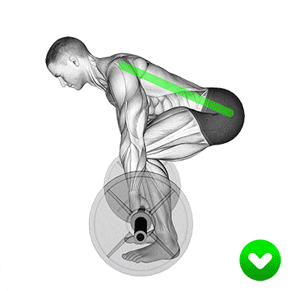

HOW TO DO:

The Barbell Bent Over Row is a compound weightlifting exercise that primarily targets the muscles of the upper back, including the lats (latissimus dorsi), rhomboids, and traps, as well as the biceps and rear deltoids. It also engages the core muscles for stability. This exercise is commonly used to build strength and muscle mass in the back and arms.
- Setup: Stand with your feet shoulder-width apart, toes pointing forward, and the barbell in front of you on the floor. You can choose to use an overhand grip (palms facing you) or an underhand grip (palms facing away) on the bar, depending on your preference and comfort.
- Bend at the Hips: Hinge at your hips while keeping your back straight. Lower your torso until it is almost parallel to the floor. Keep your knees slightly bent throughout the movement.
- Grasp the Barbell: Reach down and grip the barbell with your hands slightly wider than shoulder-width apart. Your arms should be fully extended, and your grip should be firm. 
- Starting Position: Your back should be flat, chest out, and shoulder blades pulled back and down. This is the starting position.
- The Row: Pull the barbell towards your upper abdomen or lower chest while keeping your elbows close to your body. Focus on squeezing your shoulder blades together at the top of the movement to engage your back muscles fully. Keep your core tight throughout the exercise.
- Lower the Barbell: Slowly lower the barbell back down to the starting position while maintaining control. Do not allow the weight to pull you forward; instead, control the descent.
TIPS FOR PROPER FORM:
- Avoid rounding your back during the exercise, as this can lead to injury. Keep your back straight and engage your core for stability.
- Keep your head in a neutral position, looking slightly forward, to maintain proper spinal alignment.
- Do not use momentum to lift the weight; focus on using your back and arm muscles to perform the rowing movement.
- You can use a weightlifting belt for extra support if needed, especially when lifting heavy loads.
BENEFITS
Back Muscle Development: The barbell bent-over row is a compound exercise used to develop and strengthen the entire posterior chain, including both the hips and upper back. While most exercises target a specific muscle on the back of the body, this compound exercise targets the entire back every rep. It helps to build a strong, well-developed back, giving you a more defined and muscular appearance.
Enhances Upper Body Strength: This exercise, which is very popular in bodybuilding and power lifting, is very effective for the development of improved muscle strength, endurance and overall body strength. You can add it to your training programs as part of muscle growth and upper body strength training.
Boosts Grip Strength: Holding onto the barbell during the exercise challenges your grip strength. Over time, this can lead to improved grip strength, which can be beneficial for various exercises and activities in and out of the gym.
Improves Posture: The best way to protect your back against injury is to strengthen the muscles that support it. The erector spinae muscles, also known as spinal erectors, run vertically down your entire back on either side of your spine. These are not muscles you can typically see bulging underneath your skin, as they are below other muscles, yet they still make up a large portion of the posterior chain.
MUSCLES WORKED
- Back
- Biceps